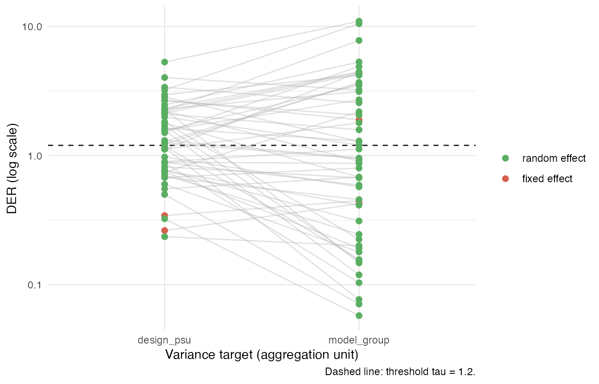

Choosing the Variance Target
JoonHo Lee
2026-07-04
Source:vignettes/choosing-the-target.Rmd
choosing-the-target.RmdOverview
The Design Effect Ratio compares two variances: a design-based sandwich variance in the numerator and the model-based MCMC posterior variance in the denominator. The denominator is fixed the moment you fit the model. The numerator is not: it depends on how you aggregate the score contributions into clusters, and that choice is yours to make. This vignette is written for practitioners who have run a first diagnostic (see Getting Started) and now need to decide which variance target to declare.
The central message is that the aggregation unit is part of the estimand, not an implementation detail. Two defensible targets — the survey’s design PSUs and the model’s grouping factor — answer two different questions about the same fitted model, and they can disagree materially about which parameters are survey-sensitive. svyder makes you name the target explicitly so that the diagnostic is reproducible and its meaning is unambiguous.
We cover, in order:
-
Why
clusterhas no default and the two canonical choices. - Two targets on the demo: computing and reading both.
-
der_compare(): the recommended single-call comparison. - Strata and the finite-cluster correction for real stratified designs.
-
The cluster universe (
cluster_strata=) for selected-but-empty PSUs. -
Weight conventions (
normalize=) and why random-effect DERs are not invariant to them. - Recommended practice for reporting.
This vignette is about the decision and its mechanics. It
does not derive the sandwich estimator or explain the classification
tiers — for the mathematics of the bread and meat see
vignette("theory-sandwich"), and for the compute –>
classify –> correct workflow see The
Compute–Classify–Correct Pipeline.
Key insight. The DER is only interpretable relative to a declared variance target. Changing the aggregation unit does not “fix” or “break” the diagnostic; it changes the question being asked. Report the target you chose.
d <- nsece_demo
# Design-based target: aggregate scores to the survey's sampling clusters (PSUs)
res_psu <- der_compute(
d$draws,
y = d$y,
X = d$X,
group = d$group,
weights = d$weights,
cluster = d$psu, # <- the aggregation unit is the design PSU
family = "binomial",
sigma_theta = d$sigma_theta,
param_types = d$param_types
)
# Model-aligned target: aggregate scores to the model's grouping factor (states)
res_group <- der_compute(
d$draws,
y = d$y,
X = d$X,
group = d$group,
weights = d$weights,
cluster = d$group, # <- the aggregation unit is the model group
family = "binomial",
sigma_theta = d$sigma_theta,
param_types = d$param_types
)Why there is no default cluster
Most survey-variance software has a natural default: aggregate to the design’s primary sampling units. svyder deliberately refuses to guess. The meat of the sandwich is a sum of cluster score totals,
J_c \;=\; \sum_{h}\frac{C_h}{C_h-1}\sum_{c\in h} (t_{hc}-\bar t_h)(t_{hc}-\bar t_h)^{\!\top}, \qquad t_{hc}=\sum_{i\in c} s_i,
so the value of J_c — and therefore every DER — depends on what you call a cluster c. There is no way to compute the numerator without committing to an aggregation unit, and different units encode genuinely different variance targets. Requiring the argument keeps that commitment visible in your code.
Concretely, omitting cluster is an error, not a silent
fallback. A call like
der_compute(d$draws, y = d$y, X = d$X, group = d$group,
weights = d$weights, family = "binomial",
sigma_theta = d$sigma_theta)stops with a message that spells out the decision you must make:
'cluster' must be supplied explicitly -- the sandwich aggregation unit is part
of the variance-target definition.
* design-based target: cluster = <design PSU ids>
* model-aligned target: cluster = group
See der_compare() to report both.The two canonical choices named in that message are:
-
Design-PSU target —
cluster = nsece_demo$psu. Aggregate to the survey’s sampling clusters. This asks: given the actual sampling design, how much sampling variability does each parameter carry? It is the target most faithful to the survey’s variance structure and typically the more conservative of the two for within-group effects. -
Model-group target —
cluster = nsece_demo$group. Aggregate to the model’s grouping factor (here, the 51 states). This asks: how much residual design variability remains after the random effects have already absorbed between-group heterogeneity? Because the model’s own clustering has soaked up much of the between-cluster signal, this target is usually smaller for random effects.
Note. These are not “right” and “wrong” targets. The design-PSU target answers a question about the sampling process; the model-group target answers a question about what the fitted hierarchy has left unmodeled. A careful analysis reports both.
For reference, the demo has 644 design PSUs nested within 51 model groups, so the two aggregation units are genuinely different partitions of the same 6,785 observations.
Two targets on the demo
With both diagnostics fitted above, we classify each at the default threshold \tau = 1.2 and read the summaries. Start with the design-PSU target.
cls_psu <- der_classify(res_psu, tau = 1.2, verbose = FALSE)
cls_psu
#> svyder diagnostic (54 parameters)
#> Family: binomial | N = 6785 | J = 51
#> Target: 644 cluster(s) | meat: centered, DF-corrected | weights: unit_mean
#> DER range: [0.235, 5.308]
#> Tier III (DER undefined): sigma_theta
#> Threshold (tau): 1.20
#> Flagged: 30 / 54 (55.6%)
#>
#> Flagged parameters:
#> beta[2] DER = 2.689 [I-a] -> CORRECT
#> theta[1] DER = 3.386 [II] -> CORRECT
#> theta[4] DER = 2.210 [II] -> CORRECT
#> theta[5] DER = 1.568 [II] -> CORRECT
#> theta[6] DER = 2.104 [II] -> CORRECT
#> theta[7] DER = 2.232 [II] -> CORRECT
#> theta[9] DER = 5.308 [II] -> CORRECT
#> theta[11] DER = 2.655 [II] -> CORRECT
#> theta[15] DER = 1.576 [II] -> CORRECT
#> theta[18] DER = 4.025 [II] -> CORRECT
#> ... and 20 more
#> Compute time: 0.022 secUnder the design-PSU target the DER range is [0.235,\,
5.308] and 30 of 54 parameters are flagged
(55.6%). The within-group poverty coefficient beta[2]
carries the headline design sensitivity: its DER is
2.689 (Tier I-a, flagged), while the two between-group
fixed effects sit well below threshold (beta[1] at 0.263
and beta[3] at 0.343, both Tier I-b, retained). Among the
random effects, 29 of 51 states are flagged, with a
median random-effect DER of 1.311 — under the design PSUs, per-state
variation is exposed to the sampling design rather than shielded by
shrinkage.
Now the model-group target.
cls_group <- der_classify(res_group, tau = 1.2, verbose = FALSE)
cls_group
#> svyder diagnostic (54 parameters)
#> Family: binomial | N = 6785 | J = 51
#> Target: 51 cluster(s) (= model groups) | meat: centered, DF-corrected | weights: unit_mean
#> DER range: [0.058, 10.988]
#> Tier III (DER undefined): sigma_theta
#> Threshold (tau): 1.20
#> Flagged: 25 / 54 (46.3%)
#>
#> Flagged parameters:
#> beta[2] DER = 1.893 [I-a] -> CORRECT
#> theta[1] DER = 2.564 [II] -> CORRECT
#> theta[3] DER = 1.795 [II] -> CORRECT
#> theta[4] DER = 4.402 [II] -> CORRECT
#> theta[5] DER = 2.704 [II] -> CORRECT
#> theta[6] DER = 1.584 [II] -> CORRECT
#> theta[7] DER = 7.796 [II] -> CORRECT
#> theta[9] DER = 10.988 [II] -> CORRECT
#> theta[11] DER = 2.061 [II] -> CORRECT
#> theta[18] DER = 3.222 [II] -> CORRECT
#> ... and 15 more
#> Compute time: 0.006 secUnder the model-group target the DER range widens to
[0.058,\,
10.988] but only 25 of 54 parameters are
flagged. The poverty coefficient beta[2] remains flagged —
its DER is now 1.893, still above \tau but noticeably smaller than under the
design PSUs — while the between-group fixed effects stay retained (0.424
and 0.447). The random-effect picture shifts the most: 24 of
51 states are flagged and the median random-effect DER falls to
0.956, below 1. Once the state random effects absorb
between-state heterogeneity, most states no longer read as
design-sensitive.
Key insight. The one parameter that is flagged under both targets — the within-group poverty coefficient
beta[2]— is the robust finding. Its flag does not depend on how you aggregate, so it is the parameter you can most confidently say needs a design-aware interval. Parameters that flip between targets (many of the random effects here) are target-dependent and should be reported as such.
der_compare(): one call, both targets
Rather than fit and read two objects by hand,
der_compare() takes a single fitted result plus a named
list of cluster-id vectors and returns the DER for every parameter
under every target. This is the recommended way to make the comparison,
because it guarantees identical draws, data, weights, and threshold
across targets — the only thing that varies is the aggregation unit.
cmp <- der_compare(
res_psu,
clusters = list(
design_psu = nsece_demo$psu,
model_group = nsece_demo$group
)
)
head(cmp, 6)
#> param cluster_name der
#> 1 beta[1] design_psu 0.2626885
#> 2 beta[2] design_psu 2.6894416
#> 3 beta[3] design_psu 0.3430527
#> 4 theta[1] design_psu 3.3858856
#> 5 theta[2] design_psu 0.6759045
#> 6 theta[3] design_psu 1.1182861The result is a long data frame with one row per parameter x target
combination (columns param, cluster_name,
der). For a compact side-by-side view of the fixed effects,
reshape to wide:
fe <- cmp[grepl("^beta", cmp$param), ]
reshape(fe, idvar = "param", timevar = "cluster_name", direction = "wide")
#> param der.design_psu der.model_group
#> 1 beta[1] 0.2626885 0.4235415
#> 2 beta[2] 2.6894416 1.8925907
#> 3 beta[3] 0.3430527 0.4469229Reading across the row for beta[2], the poverty
coefficient carries a DER of 2.689 under the design
PSUs versus 1.893 under the model group — the same
qualitative conclusion (correct it) but a different magnitude of design
inflation. The between-group coefficients beta[1] and
beta[3] stay far below threshold under either target,
exactly as Theorem 1 predicts for effects whose identifying variation is
almost entirely between groups.
A quick visual comparison of the full profile makes the target-dependence of the random effects easy to see:
if (requireNamespace("ggplot2", quietly = TRUE)) {
library(ggplot2)
cmp$is_beta <- grepl("^beta", cmp$param)
ggplot(cmp, aes(x = cluster_name, y = der, group = param,
colour = is_beta)) +
geom_hline(yintercept = 1.2, linetype = "dashed",
colour = svyder_pal[["target"]]) +
geom_line(alpha = 0.4, colour = "grey70") +
geom_point(size = 2) +
scale_colour_manual(values = c(`TRUE` = svyder_pal[["I-a"]],
`FALSE` = svyder_pal[["II"]]),
labels = c(`TRUE` = "fixed effect",
`FALSE` = "random effect"),
name = NULL) +
scale_y_continuous(trans = "log10") +
labs(x = "Variance target (aggregation unit)",
y = "DER (log scale)",
caption = "Dashed line: threshold tau = 1.2.") +
theme_minimal()
}
DER under the two targets. Points above the dashed threshold line are flagged. The within-group poverty coefficient (beta[2]) sits above the line under both targets; many random effects cross the line only under the design-PSU target.
Strata and the finite-cluster correction
Real stratified designs add two refinements to the meat, both
surfaced as arguments to der_compute():
-
strata=— a stratum id per observation. When supplied, cluster score totals are centered within stratum before the outer products are summed, so that between-stratum differences (which are by design, not sampling error) do not inflate the variance. -
center_meat = TRUE(default) — subtract the stratum mean score total \bar t_h from each cluster total, as in the formula above. -
df_correct = TRUE(default) — apply Binder’s finite-cluster factor C_h/(C_h-1) per stratum, correcting for the fact that a stratum with C_h sampled clusters estimates its own mean.
Setting
center_meat = FALSE, df_correct = FALSE, strata = NULL
reproduces the version-1 (uncentered, uncorrected) meat, which is
occasionally useful for matching legacy output.
The bundled demo has no strata slot — it is a single-stratum synthetic design — so these arguments have nothing to center or correct here and we leave them at their defaults. They matter for genuine multi-stratum surveys such as the real NSECE (415 PSUs in 30 strata; see the Case Study). The call for a stratified design would read:
# Illustrative: a real design would supply a stratum id per observation.
der_compute(
draws, y = y, X = X, group = group, weights = weights,
cluster = psu, # sampling clusters
strata = stratum_id, # <- stratum per observation
center_meat = TRUE, # subtract within-stratum mean cluster total
df_correct = TRUE, # Binder C_h / (C_h - 1) per stratum
family = "binomial", sigma_theta = sigma_theta
)Note. Stratum centering and the C_h/(C_h-1) factor are properties of the variance target, not tuning knobs. They encode how the survey was stratified and are recorded in the fitted object’s
$targetso that the target is fully self-describing.
The cluster universe
A subtlety arises in multi-stage designs when a selected PSU contributes no observations to the model’s estimation sample — for example, a second-stage sample that came back empty. Such a PSU still carries design information: it is a cluster whose score total is exactly zero, and dropping it silently would understate the between-cluster variance.
The cluster_strata= argument declares the full
cluster universe so that selected-but-empty PSUs enter the meat
as zero score-total clusters. It requires integer cluster ids running
over 1:length(cluster_strata) and requires
strata (each entry gives the stratum of the corresponding
cluster id).
The demo needs none of this: every realized cluster has at least one observation, so the cluster universe is exactly the set of clusters that appear in the data.
# Every PSU in the demo contributes >= 1 observation, so no empty clusters exist.
all(table(d$psu) >= 1)
#> [1] TRUEAccordingly we leave cluster_strata = NULL (its
default). Declare it only when your design’s frame includes clusters
that were selected but returned empty samples, so the finite-cluster
factor counts all selected clusters, not just the non-empty
ones.
Weight conventions
The final component of the target is how survey weights are scaled
before they enter the score. The normalize argument offers
three conventions:
-
"unit_mean"(default) — rescale weights to mean 1 across the whole sample. -
"group_size"— rescale weights within each group to sum to the group’s sample size. -
"none"— use the raw weights as supplied.
The chosen convention is recorded in the fitted object’s
$target, because — unlike a classical design-based point
estimate — random-effect DERs are not invariant to weight
rescaling. Rescaling changes the relative contribution of
observations to each group’s score total, which changes the meat, which
changes the DER. The convention is therefore part of the variance target
you declare, not a harmless normalization.
On this demo, however, all three conventions coincide, because the demo’s weights are already normalized within group to mean 1:
der_at <- function(nrm) {
r <- der_compute(d$draws, y = d$y, X = d$X, group = d$group,
weights = d$weights, cluster = d$psu, family = "binomial",
sigma_theta = d$sigma_theta, param_types = d$param_types,
normalize = nrm)
der_decompose(r)$der
}
der_um <- der_at("unit_mean")
der_gs <- der_at("group_size")
der_no <- der_at("none")
# The three DER vectors are identical up to floating-point noise on this demo.
max(abs(der_um - der_gs))
#> [1] 2.720046e-14
max(abs(der_um - der_no))
#> [1] 3.752554e-14The differences are at the level of machine precision, so we cannot use the demo to illustrate weight-convention sensitivity — doing so would be misleading.
Instead, the effect is real and can be dramatic on genuine survey weights. In the paper’s analysis of the real NSECE 2019 data (not this demo), the weight convention reverses the ordering of the two targets:
| Target (real NSECE) | Convention | \beta_1 poverty DER |
|---|---|---|
| Model-group | unit-mean | 4.59 |
| Model-group | within-group | 2.70 |
| Design-PSU | unit-mean | 3.55 |
| Design-PSU | within-group | 4.70 |
Under the unit-mean convention the model-group target reports the larger DER (4.59 vs 3.55); under the within-group convention the ordering flips and the design-PSU target reports the larger DER (4.70 vs 2.70). The paper’s poverty coefficient stays flagged under every target x convention combination — that robustness is what makes it a credible headline — but its magnitude, and even which target looks more conservative, depends on the convention.
Key insight. Report the weight convention alongside the aggregation unit. The two together define the variance target; the numbers above are the paper’s real-data demonstration that leaving either implicit can silently reverse your conclusion about which target is more conservative. (These are real-NSECE figures for attribution only — they are not reproducible from
nsece_demo, whose conventions coincide.)
Recommended practice
Because the DER is defined relative to a declared target, two habits keep the diagnostic honest and reproducible.
Report both canonical targets. Run
der_compare()withlist(design_psu = ..., model_group = ...)and present the DER of your key parameters under both. Parameters flagged under both targets (likebeta[2]here) are the robust findings; parameters that flip are target-dependent and should be flagged as such rather than reported as if the choice were settled.Declare the weight convention and the aggregation unit explicitly. State in your methods which
normalizeconvention and whichclusteryou used — ideally by showing the code. The fitted object already records this for you:
res_psu$target[c("cluster_is_group", "strata_n", "center", "df_correct",
"normalize", "cluster_universe_declared")]
#> $cluster_is_group
#> [1] FALSE
#>
#> $strata_n
#> [1] 1
#>
#> $center
#> [1] TRUE
#>
#> $df_correct
#> [1] TRUE
#>
#> $normalize
#> [1] "unit_mean"
#>
#> $cluster_universe_declared
#> [1] FALSEEverything needed to reconstruct the variance target — whether the cluster was the model group, how many strata, whether the meat was centered and DF-corrected, the weight convention, and whether a full cluster universe was declared — travels with the object. A reader who has the code and the recorded target can reproduce the diagnostic exactly.
Note. “Which target?” has no universal answer, but it always has a reportable answer. The design-PSU target is the more faithful description of the sampling variance; the model-group target describes what the fitted hierarchy leaves unmodeled. Naming your choice — and showing the other — is what makes the DER interpretable.
What’s next?
- To fold the chosen target into the full workflow — classify at a threshold, correct only the flagged parameters, and verify the unflagged draws are untouched — read The Compute–Classify–Correct Pipeline.
- To see both targets applied end-to-end on the demo, with fixed- and random-effect interpretation and a publication-ready write-up, read the Case Study: NSECE-Style Survey Data.
- For the mathematics of the bread and meat — why the aggregation
unit, stratum centering, the C_h/(C_h-1) factor, the cluster universe, and
the weight convention enter the sandwich the way they do — see
vignette("theory-sandwich").